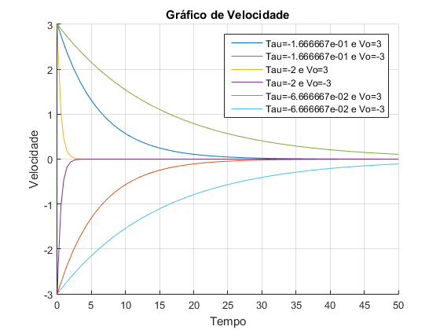
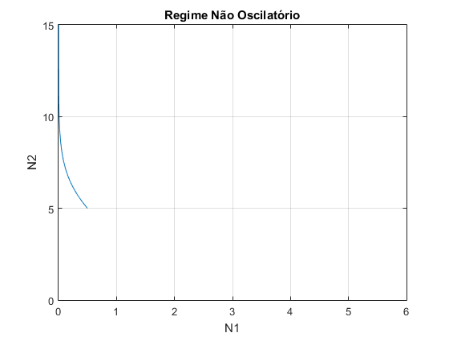
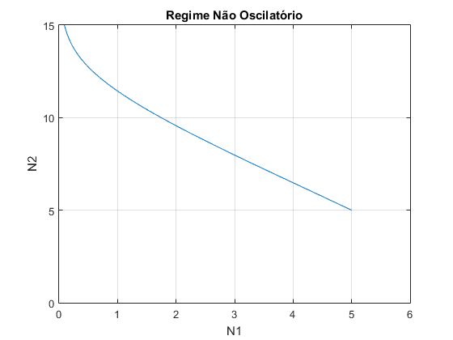

Contents
1ºLaboratório de Modelacao e Simulacao
2ºSemestre - 2016/2017
Luís Almeida, nº81232
Pedro Vasco, nº81880
Grupo 11 Turno 2ºfeira 10hclear;
close all;
clc;
1 - Simulação do movimento livre de uma viatura
% Definição de constantes
beta=[5 10 10];
m=[30 5 150];
tauu=(-beta./m);
Gráfico da velocidade
% Posiçao inicial y=5; hold on; grid on; for i=1:3 tau=tauu(i); v0=3; sim('diagramablocos'); plot(t, v); v0=-3; sim('diagramablocos'); plot(t, v); end title('Gráfico de Velocidade'); xlabel('Tempo'); ylabel('Velocidade'); legend(sprintf('Tau=%d e Vo=3',tauu(1)),sprintf('Tau=%d e Vo=-3',tauu(1)),sprintf('Tau=%d e Vo=3',tauu(2)),sprintf('Tau=%d e Vo=-3',tauu(2)),sprintf('Tau=%d e Vo=3',tauu(3)),sprintf('Tau=%d e Vo=-3',tauu(3))); hold off;
Como seria de esperar, dado que não é aplicada nenhuma força exterior, a força de atrito faz com que o carro pare ou seja, que a velocidade tenda para zero à medida que o tempo aumenta. Quanto maior o maior a atenuação da velocidade resultante da exponencial decrescente logo mais depressa a velocidade se aproxima de zero. Isto advem da constante de tempo ser porporcional a constante de atrito, assim é lógico que com o aumento da constante de atrito o carrinho tenda a parar mais rapidamente.
Grafico da posição
figure(); hold on; grid on; for i=1:3 tau=tauu(i); v0=3; sim('diagramablocos'); plot(t, p); v0=-3; sim('diagramablocos'); plot(t, p); end title('Gráfico de Posição'); xlabel('Tempo'); ylabel('Posicao'); legend(sprintf('Tau=%d e Vo=3',tauu(1)),sprintf('Tau=%d e Vo=-3',tauu(1)),sprintf('Tau=%d e Vo=3',tauu(2)),sprintf('Tau=%d e Vo=-3',tauu(2)),sprintf('Tau=%d e Vo=3',tauu(3)),sprintf('Tau=%d e Vo=-3',tauu(3)));
Tal como acontece no caso da velocidade, quanto maior o menor a variação da posição dado que a velocidade também tende mais depressa para zero
2.2 - Modelo Predador-Presa
clear; close all; % Tempo de simulação simtime e valores das constantes alfa1 e alfa2 simtime=10; step=0.1; alfa1=1; alfa2=1; % Definição de valores iniciais de N1 e N2 vN1_0=[0.5 10]; vN2_0=[0.5 10];
Gráficos para e positivos
% Definição dos deltas delta1=1; delta2=1; % Simulação para as diferentes combinações de valores iniciais for i=1:2 N1_0=vN1_0(i); for j=1:2 N2_0=vN2_0(j); sim('predadorpresas'); figure(); plotyy(t,N1,t,N2); grid on; xlabel('Tempo'); ylabel('Número de espécies'); title('Evolução Predador Presa'); legend(sprintf('N1_0=%d',vN1_0(i)),sprintf('N2_0=%d',vN2_0(j))); end end
Tal como previsto teoricamente, com os dois deltas positivos as presas vão se extinguir enquanto que os predadores vão aumentar indefinidamente. Enquanto o numero de predadores é menor que as presas cresecem mas dado que os predadores crescem sempre as presas acabam por se extinguir.
Gráficos para positivo e negativo
% Definição dos deltas delta1=1; delta2=-1; simtime=50; % Simulação para as diferentes combinações de valores iniciais for i=1:2 N1_0=vN1_0(i); for j=1:2 N2_0=vN2_0(j); sim('predadorpresas2'); figure(); plotyy(t,N1,t,N2); grid on; xlabel('Tempo'); ylabel('Número de espécies'); title('Evolução Predador Presa'); legend(sprintf('N1_0=%d',vN1_0(i)),sprintf('N2_0=%d',vN2_0(j))); end end

Quando o numero de predadores diminui para um valor menor que , o numero de presas começa a aumentar. O mesmo acontece para o caso contrário. Verifica-se então o regime oscilatório previsto espelhado nos gráficos de simulação.
Gráficos para negativo e positivo
% Definição dos deltas delta1=-1; delta2=1; simtime=10; % Simulação para as diferentes combinações de valores iniciais for i=1:2 N1_0=vN1_0(i); for j=1:2 N2_0=vN2_0(j); sim('predadorpresas'); figure(); plotyy(t,N1,t,N2); grid on; xlabel('Tempo'); ylabel('Número de espécies'); title('Evolução Predador Presa'); legend(sprintf('N1_0=%d',vN1_0(i)),sprintf('N2_0=%d',vN2_0(j))); end end
Neste caso, como o numero de presas diminui sempre e o numero de predadres aumenta sempre independentemente dos valores de , as presas extinguem-se e os predadores aumentam indefinidamente
Gráficos para e negativos
% Definição dos deltas delta1=-1; delta2=-1; % Simulação para as diferentes combinações de valores iniciais for i=1:2 N1_0=vN1_0(i); for j=1:2 N2_0=vN2_0(j); sim('predadorpresas'); figure(); plotyy(t,N1,t,N2); grid on; xlabel('Tempo'); ylabel('Número de espécies'); title('Evolução Predador Presa'); legend(sprintf('N1_0=%d',vN1_0(i)),sprintf('N2_0=%d',vN2_0(j))); end end
Neste caso o número de presas diminui sempre até que se extinguem. Relativamente aos predadores, quando a população de presas passa a ser pequena o numero de predadores começa a diminuir. Como as presas se extinguem, os predadores acabam por se extinguir também.
2.3 - Modelo Predador-Presa
clear; close all; % Definição dos alfas e tempo de simulação simtime=10; step=0.1; alfa1=1; alfa2=1; % Valores iniciais das espécies vN1_0=[0.5 5]; vN2_0=[0.5 5];
Regime oscilatório
delta1=1; delta2=-1; for i=1:2 N1_0=vN1_0(i); for j=1:2 N2_0=vN2_0(j); sim('predadorpresas2'); figure(); plot(N1,N2); grid on; xlabel('N1'); ylabel('N2'); title('Regime Oscilatório'); end end
Tal como previsto teoricamente, verificamos aqui o regime oscilatório
%Regime não oscilatório delta1=1; delta2=1; for i=1:2 N1_0=vN1_0(i); for j=1:2 N2_0=vN2_0(j); sim('predadorpresas2'); figure(); plot(N1,N2); axis ([0 6 0 15]); grid on; xlabel('N1'); ylabel('N2'); title('Regime Não Oscilatório'); end end 
Tal como visto nos gráficos temporais, verificamos aqui a extinção de presas e aumento indefinido de predadores
Ponto de Equilíbrio
% Definição de valores iniciais N1_0=0.5; N2_0=0.5; alfa1=1; alfa2=1; delta1=0.5; delta2=-0.5; sim('predadorpresas'); figure(); plot(N1,N2,'X'); xlabel('N1'); ylabel('N2'); title('Ponto de equilibrio: Espaço de fase'); sim('predadorpresas'); figure(); plot(t,N1,t,N2); axis ([0 10 0 1]); grid on; xlabel('Tempo'); ylabel('Número de espécies'); legend(sprintf('N1_0=%d e N2_0=%d',N1_0,N2_0)); title('Ponto de equilibrio');
Teoricamente o sistema estaria em equilíbrio se e logo dado os valores de e que consideramos e . Pela simulação vemos que o número de espécies não varia no tempo logo o sistema está em equilíbrio.
%%Condicoes iniciais em que conduzem a evolucoes identicas do sistema, %a menos de um deslocamento temporal simtime=100; N1_0=0.5; N2_0=5; sim('predadorpresas'); figure(); plot(t,N1,t,N2); axis ([0 100 0 6]); grid on; xlabel('Tempo'); ylabel('Numero de especies'); legend(sprintf('N1_0=%d e N2_0=%d',N1_0,N2_0)); N1_0=3; N2_0=2; sim('predadorpresas'); figure(); plot(t,N1,t,N2); axis ([0 100 0 6]); grid on; xlabel('Tempo'); ylabel('Numero de especies'); legend(sprintf('N1_0=%d e N2_0=%d',N1_0,N2_0));
2.4 - Modelo Predador-Presa
clear; close all; load('presas.mat'); step=0.1; delta1=3.1; delta2=-1.5; alfa1=1.4; N1_0=4; % Parametros determinados por tentativa erro de modo a que a simulação se aproxime dos valores reais N2_0=1.6; alfa2=0.7; sim('predadorpresas',tr) figure(); plot(tr,yr,t,N1); grid on; xlabel('Tempo'); ylabel('N1'); title('Comparação dos valores reais com simulação');
Alinea b)
Esta estratégia não irá produzir uma solução que corresponde fielmente ao valor de erro mais adequado. Supondo que existe um pico experimental, com valor substancialmente maior que o simulado, a função irá ter em conta apenas este valor ignorando quaisqueres outros valores de erro mais pequenos. Dado isto, não iremos ter noção se o modelo de simulação está adequado pois dado só olharmos para o máximo não sabemos qual a erro de simulação no resto da função.
step=0.1; load('presas.mat'); simtime=tr; delta1=3.1; delta2=-1.5; alfa1=1.4; N1_0=4; N2_0=1.6; alfa2=0.7; sim('predadorpresas',tr); valfa2=[0.6:0.02:0.8]; vN2_0=[1.4:0.02:1.8]; i=0; j=0; for alfa2= 0.6:0.02:0.8 j=j+1; for N2_0= 1.4:0.02:1.8 i=i+1; V=[alfa2, N2_0]; erro(j,i)=max_dif(V); end i=0; h=waitbar(j/length(vN2_0)); end delete(h); figure(); mesh(vN2_0,valfa2,erro); xlabel('N2_0'); ylabel('\alpha_2'); zlabel('erro'); title('Superfície de erro'); figure(); surf(vN2_0,valfa2,erro); xlabel('N2_0'); ylabel('\alpha_2'); zlabel('erro'); title('Superfície de erro');
Dado que o que visualizamos é uma superfície podemos estimar a região de valores em que se situa o mínimo (zona mais escura). Em seguida, o mais adequado será ir diminuindo os valores máximos e minimos de alfa2 e N2_0 de modo a chegarmos a regiões cada vez mais pequenos e com menor erro. No entanto, por mais que se diminua os intervalos mínimos e máximos iremos sempre ter uma região (cada vez melhore representativa do mínimo) mas nunca um ponto exato.
valfa22=[0.7:0.01:0.75]; vN2_00=[1.6:0.01:1.7]; i=0; j=0; for alfa22= 0.7:0.01:0.75 j=j+1; for N2_00= 1.6:0.01:1.7 i=i+1; V2=[alfa22, N2_00]; erro2(j,i)=max_dif(V2); end i=0; h=waitbar(j/length(vN2_00)); end delete(h); figure(); mesh(vN2_00,valfa22,erro2); xlabel('N2_0'); ylabel('\alpha_2'); zlabel('erro'); title('Superfície de erro'); figure(); surf(vN2_00,valfa22,erro2); xlabel('N2_0'); ylabel('\alpha_2'); zlabel('erro'); title('Superfície de erro');
Dimiuindo ainda mais os intervalos considerado para as constantes
valfa23=[0.7045:0.0001:0.7048]; vN2_000=[1.6138:0.0001:1.6151]; i=0; j=0; for alfa23= 0.7045:0.0001:0.7048 j=j+1; for N2_000= 1.6138:0.0001:1.6151 i=i+1; V3=[alfa23, N2_000]; erro3(j,i)=max_dif(V3); end i=0; h=waitbar(j/length(vN2_000)); end delete(h); figure(); mesh(vN2_000,valfa23,erro3); xlabel('N2_0'); ylabel('\alpha_2'); zlabel('erro'); title('Superfície de erro'); figure(); surf(vN2_000,valfa23,erro3); xlabel('N2_0'); ylabel('\alpha_2'); zlabel('erro'); title('Superfície de erro'); % O valor minimo determinado usando este método: alfa=0.7047 e n2_0=1.614
alínea c)
Valores iniciais: alfa2=0.6 e N2_0=1.4
xo=[0.6 ,1.4];
fun = @max_dif;
[x,erro]=fminsearch(fun, xo);
fprintf('O erro é %d, para alfa2 = %d e N2_0=%d',erro, x(1), x(2));
O erro é 1.558082e-01, para alfa2 = 7.046599e-01 e N2_0=1.614422e+00
Valores iniciais: alfa2=4.7 e N2_0=10
xo=[4.7 ,10];
fun = @max_dif;
[x,erro]=fminsearch(fun, xo);
fprintf('O erro é %d, para alfa2 = %d e N2_0=%d',erro, x(1), x(2));
O erro é 4.432990e+00, para alfa2 = 3.773958e+00 e N2_0=5.781629e+00
Valores iniciais: alfa2=0.1 e N2_0=1.4
xo=[0.1 ,1.4];
fun = @max_dif;
[x,erro]=fminsearch(fun, xo);
fprintf('O erro é %d, para alfa2 = %d e N2_0=%d',erro, x(1), x(2));
O erro é 1.557817e-01, para alfa2 = 7.046687e-01 e N2_0=1.614371e+00
Valores iniciais: alfa2=0.6 e N2_0=5.8
xo=[0.6 ,5.8];
fun = @max_dif;
[x,erro]=fminsearch(fun, xo);
fprintf('O erro é %d, para alfa2 = %d e N2_0=%d',erro, x(1), x(2));
O erro é 1.558017e-01, para alfa2 = 7.046715e-01 e N2_0=1.614432e+00
Verificamos que os resultados produzidos por fminsearch estão proximos dos valores determinados através da procura exaustiva da alinea anterior. Como é visivel na ultima evocação que fazemos à função fminsearch, verificamos que esta não converge para o mínimo para qualquer valor de alfa e n2. Como os valores inicias estão muito distantes dos que produzem solução mínima, o método não converge.
alinea d)
load('presas.mat'); step=0.1; delta1=3.1; delta2=-1.5; alfa1=1.4; N1_0=4; N2_0=x(2); alfa2=x(1); sim('predadorpresas',tr) figure(); plot(tr,yr,'o'); hold on; plot(t,N1,'-'); grid on; xlabel('Tempo'); ylabel('N1'); title('Comparação do real com simulado'); % Verificamos que os valores minimos determinados pela função fminsearch conduzem a uma boa aproximação da realidade
3.1 - Sistema Caótico
clear; close all; simtime=10; m=1; teta1_0=0.2; teta2_0=0.2; l=0.5; g=9.8; p1_0=0; p2_0=0; sim('pendulo'); % Representação dos angulos em função do tempo figure(); hold on; grid on; plot(t, teta1); plot(t, teta2); xlabel('Tempo'); ylabel('\theta'); hold off; % Representação dos angulos no plano (teta1,teta2) figure(); plot(teta1, teta2); grid on; xlabel('\theta_1'); ylabel('\theta_2'); title('Curvas de Lisajous');
3.2 - Sistema Caótico
x=l*(sin(teta2)+sin(teta1)); y=-l*(cos(teta2)+cos(teta1)); % Sistema não caótico figure(); plot(x,y); xlabel('x'); ylabel('y'); title('Sistema não caótico'); % Representação dos angulos no plano (teta1,teta2) figure(); plot(teta1, teta2); grid on; xlabel('\theta_1'); ylabel('\theta_2'); title('Sistema não caótico');

Sistema caótico (quando se aumenta os angulos iniciais)
teta1_0=5; teta2_0=5; sim('pendulo'); x=l*(sin(teta2)+sin(teta1)); y=-l*(cos(teta2)+cos(teta1)); figure(); plot(x,y); xlabel('x'); ylabel('y'); title('Sistema caótico'); % Representação dos angulos no plano (teta1,teta2) figure(); plot(teta1, teta2); grid on; xlabel('\theta_1'); ylabel('\theta_2'); title('Sistema caótico');
Novo aumento dos angulos inciais
teta1_0=10; teta2_0=10; sim('pendulo'); x=l*(sin(teta2)+sin(teta1)); y=-l*(cos(teta2)+cos(teta1)); figure(); plot(x,y); xlabel('x'); ylabel('y'); title('Sistema ainda mais caótico'); % Representação dos angulos no plano (teta1,teta2) figure(); plot(teta1, teta2); grid on; xlabel('\theta_1'); ylabel('\theta_2'); title('Sistema ainda mais caótico');
3.4 - Sistema Caótico
clear; close all; % Definição de variáveis m=1; l=0.5; g=9.8; dteta1=0; dteta2=-30*pi/180; simtime=250; % Matriz de pontos (x,y) x=-1:(0.15):1; y=-1:(0.15):1; tamanhovetor=length(x); % Ciclo for que percorre a matriz de (x,y) de modo a calcular os tempos de loop do pendulo for i=1:1:tamanhovetor for j=1:1:tamanhovetor if (((x(i)^2)+(y(j)^2))>(2*l)^2 ) tempo(tamanhovetor-j+1,i)=NaN; continue; else A=(x(i)^2)+y(j)^2; y1=(y(j)*A-sqrt((y(j)^2)*A^2-A*(A^2-(l^2)*4*x(i)^2)))/(2*A); x1=sqrt((l^2)-(y1)^2); if x<0 x1=-x1; end teta1_0=atan2(x1,y1); teta2_0=atan2(x(i)-x1,y(j)-y1); p1_0=(1/6)*m*l*l*(8*dteta1+3*dteta2*cos(teta1_0-teta2_0)); p2_0=(1/6)*m*l*l*(2*dteta2+3*dteta1*cos(teta1_0-teta2_0)); sim('pendulo'); indice=find((teta2<-pi) | (teta2>pi)|(teta1<-pi) | (teta1>pi),1); if indice~=0; tempo(tamanhovetor-j+1,i)=t(indice); else tempo(tamanhovetor-j+1,i)=NaN; end end end end % Gráfico de cores para representar o tempo decorrido até loop. Cores mais escuras correspondem a tempos menores figure(); pcolor(x, y, log(tempo)); colorbar; title('Tempo até loop'); xlabel('x'); ylabel('y');
Intervalo de 0 a 30 segundos
x=-0.7; y=-0.1; A=(x^2)+y^2; y1=(y*A-sqrt((y^2)*A^2-A*(A^2-(l^2)*4*x^2)))/(2*A); x1=sqrt((l^2)-(y1)^2); if x<0 x1=-x1; end teta1_0=atan2(x1,y1); teta2_0=atan2(x-x1,y-y1); p1_0=(1/6)*m*l*l*(8*dteta1+3*dteta2*cos(teta1_0-teta2_0)); p2_0=(1/6)*m*l*l*(2*dteta2+3*dteta1*cos(teta1_0-teta2_0)); sim('pendulo'); figure(); plot(t,teta2); hold on; grid on; k=find((teta2<-pi)|(teta2>pi),1); scatter(t(k), teta2(k), 'x'); xlim([0 30]); xlabel('Tempo (s)'); ylabel('\theta'); title('Intervalo [0,30]s'); legend(sprintf('Instante de looping=%d',t(k))); hold off;
Intervalo de 30 a 100 segundos
x=-0.55; y=0.65; A=(x^2)+y^2; y1=(y*A-sqrt((y^2)*A^2-A*(A^2-(l^2)*4*x^2)))/(2*A); x1=sqrt((l^2)-(y1)^2); if x<0 x1=-x1; end teta1_0=atan2(x1,y1); teta2_0=atan2(x-x1,y-y1); p1_0=(1/6)*m*l*l*(8*dteta1+3*dteta2*cos(teta1_0-teta2_0)); p2_0=(1/6)*m*l*l*(2*dteta2+3*dteta1*cos(teta1_0-teta2_0)); sim('pendulo'); figure(); plot(t,teta2); hold on; grid on; k=find((teta2<-pi)|(teta2>pi),1); scatter(t(k), teta2(k), 'x'); xlim([30 100]); xlabel('Tempo (s)'); ylabel('\theta'); title('Intervalo [30,100]s'); legend(sprintf('Instante de looping=%d',t(k))); hold off;
Intervalo de 100 a 250 segundos
x=0.8; y=-0.55; A=(x^2)+y^2; y1=(y*A-sqrt((y^2)*A^2-A*(A^2-(l^2)*4*x^2)))/(2*A); x1=sqrt((l^2)-(y1)^2); if x<0 x1=-x1; end teta1_0=atan2(x1,y1); teta2_0=atan2(x-x1,y-y1); p1_0=(1/6)*m*l*l*(8*dteta1+3*dteta2*cos(teta1_0-teta2_0)); p2_0=(1/6)*m*l*l*(2*dteta2+3*dteta1*cos(teta1_0-teta2_0)); sim('pendulo'); figure(); hold on; plot(t,teta2); grid on; k=find((teta2<-pi)|(teta2>pi),1); scatter(t(k), teta2(k), 'x'); xlim([100 250]); xlabel('Tempo (s)'); ylabel('\theta'); title('Intervalo [100,250]s'); legend(sprintf('Instante de looping=%d',t(k))); hold off;
Verificamos que o não dá nenhum loop. Isto acontece porque, dado que a sua velocidade angular é nula, a velocidade que apresenta resulta apenas da transformação da energia potencial em cinética. Concluimos então que a sua energia potencial máxima não permite imprimir-lhe uma velocidade suficiente para que ele realize o loop. Através da análise do gráfico de cores, vemos os loops demoram mais tempo quando o valor de y é mais pequeno. Isto acontece porque nesta zona do plano a energia potencial é menor.